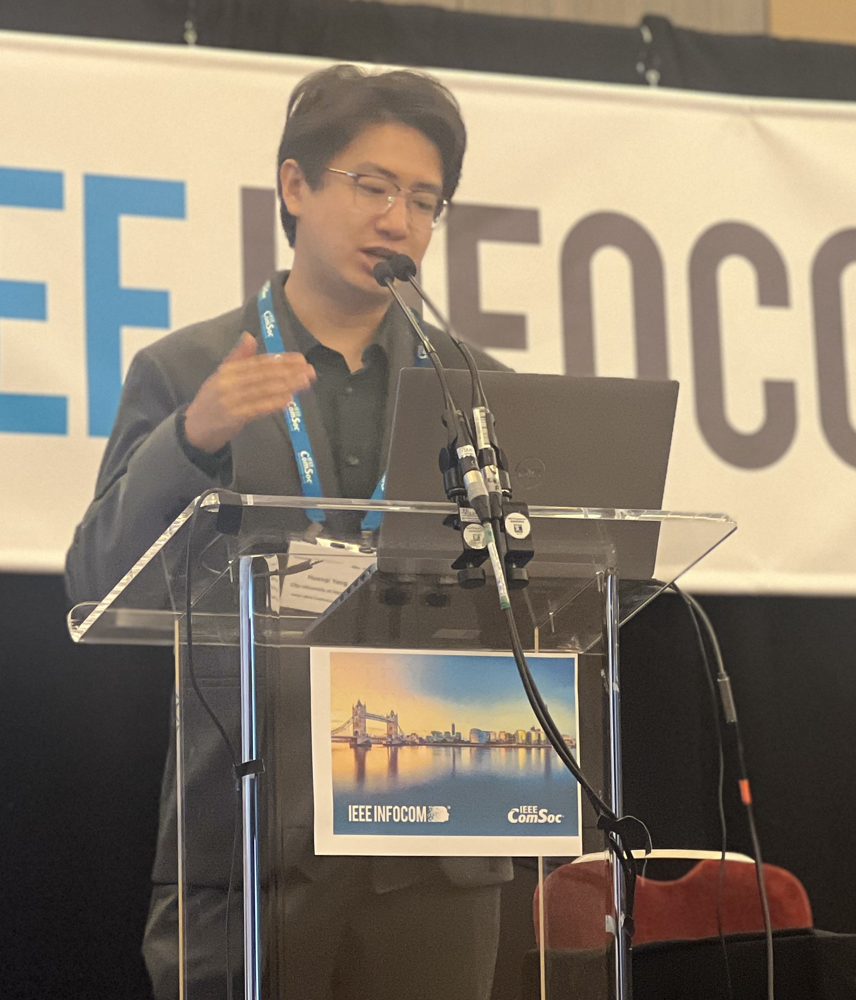

Doctoral Student
Computer Science
|
City University of Hong Kong Tat Chee Avenue, Kowloon, Hong Kong SAR |
|
| huanqi.yang@my.cityu.edu.hk |
I am a Ph.D. student in the Department of Computer Science at City University of Hong Kong advised by Prof. Weitao Xu of S2MC Lab. My research focuses on IoT such as smart sensing, IoT security, IoT+AI, wireless network etc.
I received my B.E. degree in Internet of Things Engineering from University of Electronic Science and Technology of China in 2021.
I am currently working on wireless sensing.
Education
-
Ph.D. in Computer Science, 2021-
City University of Hong Kong -
B.E. Major in Internet of Things Engineering, 2017-2021
University of Electronic Science and Technology of China -
B.Econ. Minor in Finance, 2017-2021
University of Electronic Science and Technology of China -
High School, 2014-2017
Xi'an Gaoxin No.1 High School
News
- *2022.4 Our paper entitled “Vehicle-Key: A Secret Key Establishment Scheme for LoRa-enabled IoV Communications” has been accepted by ICDCS 2022!
-
*2021.7 Our paper entitled “ULECGNet: An Ultra-Lightweight End-to-End ECG Classification Neural Network” has been accepted by IEEE Journal of Biomedical and Health Informatics!